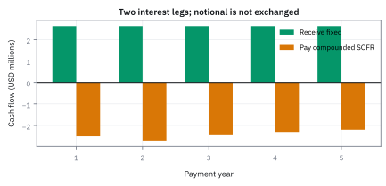
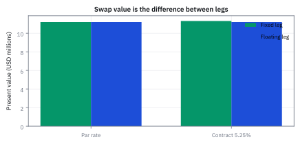
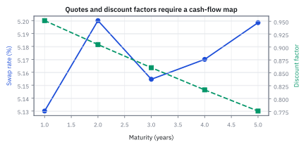
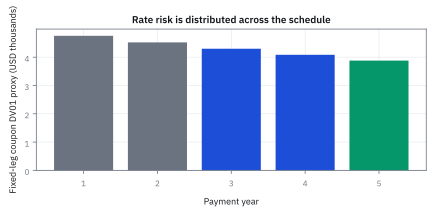
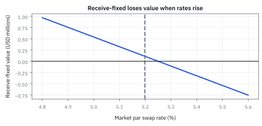
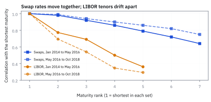
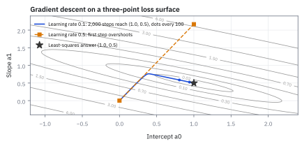

20.2 Swap Rates and the Swap Curve
swap rate คือ coupon ที่ทำให้สองขาเท่ากัน และ swap curve คือเครื่องมือแปลง quote นั้นกลับเป็นราคาเงินตามเวลา
สัญญา swap วงเงิน notional \$50,000,000 อายุ 5 ปีจ่ายดอกเบี้ยปีละครั้ง มี discount factors ปี 1 ถึง 5 คือ 0.9512, 0.9048, 0.8600, 0.8170 และ 0.7760 อัตรา par swap rate วันนี้ควรเป็นกี่เปอร์เซ็นต์?
เฉลย: 5.198422% ต่อปี คิดจาก (1 - 0.7760) / 4.3090 โดย 4.3090 ปีคือ annuity ผลรวม discount factors ทั้ง 5 งวด และหากถือสัญญา receive-fixed ที่ล็อกอัตรา 5.25% จะมีมูลค่า mark-to-market บวกเท่ากับ \$111,125
ศัพท์ของ swap desk ที่ต้องรู้ก่อน
- interest-rate swap
- สัญญาแลกกระแสดอกเบี้ยสองชุดบน notional เดียวกันโดยทั่วไปไม่แลก principal ใช้เปลี่ยน exposure ระหว่าง fixed rate กับ floating rate
- fixed leg
- ขาของ swap ที่จ่าย coupon จาก fixed rate ที่ตกลงไว้ ใช้ล็อกต้นทุนหรือรายรับดอกเบี้ยตลอดอายุสัญญา
- floating leg
- ขาที่จ่ายดอกเบี้ยซึ่ง reset ตาม reference rate ในแต่ละงวด ใช้ส่งผ่านระดับ rate ที่เกิดขึ้นจริงระหว่างอายุสัญญา
- Secured Overnight Financing Rate (SOFR)
- reference rate ของ USD ที่อิงธุรกรรม overnight Treasury repo ใช้เป็นฐานคำนวณ floating cash flow ของ swap ในตัวอย่างนี้
- overnight indexed swap (OIS)
- swap ที่ floating leg สะสม overnight reference rate ตลอดงวด ใช้สร้าง USD discount curve ภายใต้ collateral convention ที่สอดคล้อง
- par swap rate
- fixed rate ที่ทำให้ present value ของ fixed leg เท่ากับ floating leg ณ วันเริ่ม ใช้กำหนด coupon ของ swap ใหม่ให้มีมูลค่าเริ่มต้นเป็นศูนย์
- swap curve
- term structure ที่ bootstrap จาก swap และ money-market instruments ใช้ discount หรือ project cash flows ตาม curve architecture ที่ประกาศ
- receive-fixed
- position ที่รับ fixed leg และจ่าย floating leg ใช้ได้ประโยชน์โดยทั่วไปเมื่อ market swap rates ลดลงหลังทำสัญญา
- pay-fixed
- position ที่จ่าย fixed leg และรับ floating leg ใช้ได้ประโยชน์โดยทั่วไปเมื่อ market swap rates สูงขึ้นหลังทำสัญญา
- annuity
- ผลรวม discount factor คูณ accrual fraction ของ fixed payments ใช้แปลงความต่างของ swap rate เป็น present value
- reset
- เวลาที่ floating reference rate ถูกกำหนดสำหรับ accrual period ถัดไป ใช้ผูก forecast rate กับ cash flow date
- basis point
- หนึ่งในหนึ่งหมื่นของ rate หรือ 0.01 จุด ใช้รายงานการเปลี่ยนแปลง rate และ sensitivity บน desk
- DV01
- การเปลี่ยนแปลงมูลค่า USD โดยประมาณเมื่อ curve rate ขยับหนึ่ง basis point ใช้กำหนด hedge size และ risk limit
- multi-curve
- framework ที่ใช้ curve คนละเส้นสำหรับ discount และ projection ตาม collateral กับ reference index ใช้หลีกเลี่ยงสมมติฐานว่า rate ทุกชนิดแลกกันได้ไร้ basis
- Forward Rate Agreement (FRA)
- สัญญา derivative ที่ล็อกอัตราคงที่แลกกับ floating rate ในอนาคตหนึ่งงวด ใช้กำหนดต้นทุนการกู้ยืมล่วงหน้า
สัญกรณ์และหน่วยของสองขา
| สัญลักษณ์ | ความหมาย | หน่วย |
|---|---|---|
| $N$ | notional ของ swap ซึ่งใช้คูณดอกเบี้ยแต่ไม่แลก ณ maturity ใน vanilla swap | USD |
| $T_i$ | payment date ลำดับที่ $i$ | ปีจาก valuation date |
| $n$ | จำนวน payment periods ถึง swap maturity | จำนวนเต็ม |
| $\delta_i$ | accrual year fraction ของงวด $T_{i-1}$ ถึง $T_i$ | ปี |
| $D_d(0,T_i)$ | discount factor จาก discount curve | USD วันนี้ต่อ USD ที่ $T_i$ |
| $F_p(0;T_{i-1},T_i)$ | forward rate ของงวดจาก projection curve | ต่อปี |
| $K$ | fixed rate ของ contract | ต่อปี |
| $S_{0,n}$ | par swap rate วันนี้สำหรับ maturity $T_n$ | ต่อปี |
| $A_{0,n}$ | discounted fixed-leg annuity | ปี |
| $PV_{fix}$ | present value ของ fixed leg | USD |
| $PV_{flt}$ | present value ของ floating leg | USD |
| $V_{rec}$ | มูลค่าจากมุม receive-fixed | USD |
| $DV01$ | มูลค่าเปลี่ยนโดยประมาณต่อ curve shift หนึ่ง basis point | USD ต่อ basis point |
| $\Delta y$ | parallel shift ของ curve ที่ใช้ประมาณ risk | ต่อปี |
| $s,\ \tau,\ L$ | swap rate เป็นเปอร์เซ็นต์ ความยาวงวด และ LIBOR ของงวด ตามสัญกรณ์ของสไลด์ | เปอร์เซ็นต์, ปี, เปอร์เซ็นต์ |
| $\Delta_{\rm fix},\ \Delta_{\rm flt},\ G$ | ส่วนต่างต้นทุนกู้ของสองบริษัทในตลาดคงที่และลอยตัว และกำไรรวมที่แบ่งกันได้ | ต่อปี |
| $F,\ r_0,\ r_{k-1}$ | หน้าตั๋วของ floating-rate bond อัตราต่องวดวันนี้ และอัตราที่รู้ตอนต้นงวดที่ $k$ | USD และต่องวด |
| $\alpha,\ p_k,\ c_k,\ P_f$ | เงินกู้ในพอร์ตที่ใช้ลอก ราคาของ coupon งวดที่ $k$ เงินสุทธิตอน $k$ และราคา floating-rate bond | USD |
| $\hat y_t,\ y_t,\ x_{i,t}$ | อัตราที่ model ทาย อัตราจริง และตัวแปรต้นลำดับที่ $i$ ของวันที่ $t$ | เปอร์เซ็นต์ |
| $\theta,\ a_i,\ m$ | ชุด parameter ของ regression ตัวคูณแต่ละตัว และจำนวนวันในข้อมูล (สไลด์เขียนว่า $T$) | ตามหน่วยของสมการ, จำนวนวัน |
| $J(\theta),\ R^2,\ \bar y$ | ครึ่งหนึ่งของค่าเฉลี่ยความคลาดกำลังสอง สัดส่วนที่อธิบายได้ และค่าเฉลี่ยของ $y_t$ | เปอร์เซ็นต์กำลังสอง, สัดส่วน, เปอร์เซ็นต์ |
| $\alpha_{\rm lr},\ L_b$ | learning rate ของ gradient descent และขนาด mini-batch | ไม่มีหน่วย, จำนวนวัน |
ที่มาที่ไป: สัญญาแลกเปลี่ยนฉบับแรก ระหว่างบริษัทคอมพิวเตอร์กับธนาคารโลก
ในปี 1981 มีการทำสัญญาแลกเปลี่ยนภาระหนี้ข้ามสกุลเงินระหว่างบริษัทคอมพิวเตอร์ขนาดใหญ่แห่งหนึ่งกับธนาคารโลก ซึ่งถือเป็นจุดเริ่มของตลาด swap อัตราดอกเบี้ยที่ใหญ่ที่สุดในโลก
แรงจูงใจทางเศรษฐศาสตร์มาจากความได้เปรียบเชิงเปรียบเทียบ (comparative advantage): บริษัทที่มีอันดับเครดิตต่างกันอาจมีส่วนต่างต้นทุนกู้ยืมในตลาดอัตราคงที่และอัตราลอยตัวไม่เท่ากัน คู่สัญญาแต่ละฝ่ายกู้ยืมในตลาดที่ตนได้เปรียบ แล้วทำ swap แลกกระแสดอกเบี้ยกัน ส่งผลให้ทั้งสองฝ่ายมีต้นทุนดอกเบี้ยสุทธิต่ำลงกว่าการกู้ยืมโดยตรง
เนื่องจากวงเงินกู้ยืมของทั้งสองฝ่ายเท่ากันและเป็นสกุลเงินเดียวกัน จึงไม่มีการแลกเปลี่ยนเงินต้น (notional principal) จริงตอนเริ่มต้นหรือครบกำหนด แต่ละงวดชำระเฉพาะส่วนต่างดอกเบี้ยสุทธิ (netting) ระหว่างขาลอยตัวและขาคงที่
สัญญา vanilla swap ในตลาดทั่วไปมีอายุ 2, 5, 10 และ 30 ปี ขาคงที่มักจ่ายทุก 6 เดือน และขาลอยตัวมักจ่ายทุก 3 เดือน เช่น สัญญา 2 ปีวงเงิน \$1 ล้าน อัตราคงที่ 2.9894% ผู้จ่ายคงที่ต้องจ่ายงวดละ \$14,947 ขณะที่ขาลอยตัวคิดตามดอกเบี้ยตลาดงวดละ 3 เดือน
convention ของตัวอย่างและสิ่งที่จงใจย่อ
โจทย์ให้ swap USD ขนาด \$50,000,000 ฝั่ง fixed จ่ายปีละครั้ง ฝั่ง floating เปลี่ยนตาม compounded SOFR ของที่ต้องใช้ทันทีคือ discount factor ปี 1 ถึง 5: 0.9512, 0.9048, 0.8600, 0.8170 และ 0.7760
เริ่มด้วยกติกาง่ายที่ใช้ curve เดียว เพื่อเห็นว่ามูลค่าสองฝั่งมาเท่ากันอย่างไร งานจริงจึงค่อยเพิ่มวันจ่ายจริง SOFR lookback และ collateral agreement
แล้วเอาไปใช้ทำอะไรได้จริงบ้าง
อัตรา swap เป็นราคาอ้างอิงที่ใหญ่ที่สุดในตลาดการเงินโลก
ใช้แปลงหนี้อัตราลอยตัวเป็นอัตราคงที่ หรือกลับกัน ซึ่งเป็นสิ่งที่บริษัททำเพื่อจัดการความเสี่ยง
ใช้สร้างเส้นอัตราดอกเบี้ยจากอัตราที่ประกาศในตลาด ซึ่งมีสภาพคล่องดีกว่าตราสารหนี้
ใช้คำนวณความไวของพอร์ตต่ออัตราดอกเบี้ย ซึ่งย่อลงเหลือตัวเลขตัวเดียวได้
Figure 20.2a — swap แลกเฉพาะดอกเบี้ยบน notional เดียวกัน

receive-fixed รับ $N K\delta_i$ ตาม fixed schedule และจ่าย floating amount ที่รู้หลัง reset โดยทั่วไป principal ไม่ถูกส่งข้ามคู่สัญญา จึงไม่ควรวาด notional เป็น cash flow ที่ maturity
ขั้นที่ 1 — present value ของ fixed leg
swap มีสองขา เริ่มจากขาที่ง่ายกว่าก่อน คือขาที่จ่ายเท่ากันทุกงวด หกบรรทัดนี้ไม่มีอะไรใหม่เลยนอกจากการดึงตัวร่วมออกมา แต่การตั้งชื่อก้อนที่เหลือคือสิ่งที่ทำให้สูตรอัตรา swap สั้นและอ่านออก
เงินที่จ่ายในงวดหนึ่งคือเงินต้นคูณอัตราคงที่คูณสัดส่วนของปีในงวดนั้น สัดส่วนของปีจำเป็นเพราะงวดไม่ได้ยาวเท่ากันทุกงวด แล้วคิดลดกลับมาวันนี้ตามหัวข้อ 18.1 และบวกทุกงวดตามเหตุผลของหัวข้อ 18.2
กลเม็ดอยู่ที่การดึงสองก้อนที่เหมือนกันทุกงวดออกมาข้างหน้า แล้วตั้งชื่อให้ก้อนที่เหลือ
ก้อนนั้นมีหน่วยเป็นปี และไม่ขึ้นกับอัตราคงที่เลย จึงคำนวณครั้งเดียวแล้วใช้กับทุกอัตราที่จะลอง
ประโยชน์จะเห็นในขั้นที่ 4 ตอนหาอัตราที่ทำให้สัญญามีมูลค่าศูนย์ เพราะจะหารครั้งเดียวจบ ไม่ต้องลองไปเรื่อย ๆ
ขั้นที่ 2 — นิยามของขาลอยตัวเมื่อใช้สองเส้นแยกกัน
บรรทัดนี้เป็น นิยาม ของวิธีคำนวณที่เราเลือก ไม่ใช่ผลที่พิสูจน์ ปัญหาคือขาลอยตัวยังไม่รู้ว่าจะจ่ายเท่าไร เพราะอัตราจะถูกกำหนดในอนาคต เราจึงใช้อัตราล่วงหน้าจากหัวข้อ 20.1 มาแทนเงินที่จะจ่าย แล้วคิดลดด้วยอีกเส้นหนึ่ง การแยกเป็นสองเส้นเป็นเรื่องจำเป็นในทางปฏิบัติ เพราะอัตราที่ใช้อ้างอิงกับอัตราที่ใช้คิดลด ไม่จำเป็นต้องเป็นตัวเดียวกันเมื่อหลักประกันต่างกัน ตัวห้อยที่เขียนแยกไว้ มีหน้าที่กันไม่ให้หยิบเส้นผิดมาใช้โดยไม่รู้ตัว
projection curve ให้ forward rate ของแต่ละ reset period ส่วน discount curve ย้าย cash flow กลับวันนี้ การแยก subscript ป้องกันการนำ curve ผิดเส้นมาใช้โดยไม่รู้ตัว
ลองสองงวด: พจน์กลางหายไปอย่างไร
เริ่ม swap สองปีเพื่อเห็นกลไกก่อนใช้ห้าปี อัตราแต่ละงวดคำนวณจาก discount factors ชุดเดียวกัน พอเอาอัตรางวดแรกคูณค่าคิดลด ปีก่อนหน้าลบปีถัดไปจะเหลือ 0.0488 ทำกับงวดสองได้ 0.0464
บวกกันแล้ว discount factor ปีหนึ่งที่ถูกลบในงวดแรก ถูกบวกคืนในงวดสอง จึงหายไป เหลือหนึ่งลบ discount factor สุดท้าย เรียกการหักล้างเป็นทอด ๆ นี้ว่า telescoping
ใช้รูปย่อนี้เมื่อเริ่มที่วัน reset และกติกา cash flow สอดคล้องกับ curve เดียว ถ้าใช้คนละ curve หรือมี payment lag ต้องกลับไปคิดเงินแต่ละงวดก่อน
ขั้นที่ 3 — single-curve identity ของ floating leg
ถ้าอัตราล่วงหน้าและตัวคิดลดมาจากเส้นเดียวกัน เงินทุกงวดจะหักกันเป็นลูกโซ่ สูตรข้างล่างจบด้วยรูปที่ไม่ต้องรู้อัตราแต่ละงวดเลย ซึ่งเป็นเหตุผลที่ตำราเก่าเขียนสูตร swap ได้สั้นมาก แต่ข้อสมมติเบื้องหลังคือขั้นที่ 2 ที่ถูกยุบทิ้ง
$F_i$ ย่อจาก $F(0;T_{i-1},T_i)$ เริ่มจากอัตราล่วงหน้าเขียนด้วยตัวคิดลด ซึ่งเป็นรูปเดียวกับหัวข้อ 20.1 เพียงแต่เขียนแบบทบต้นเป็นงวด แทนที่จะเป็นต่อเนื่อง
คูณทั้งสองข้างด้วยตัวคิดลดของงวดนั้น ตัวส่วนจึงตัดกันหมด เหลือผลต่างของตัวคิดลดสองตัวที่ติดกัน นั่นคือกลเม็ดทั้งหมดของหัวข้อนี้
พอบวกทุกงวด พจน์กลางทุกตัวโผล่สองครั้งด้วยเครื่องหมายตรงข้าม จึงหักกันหมด เหลือแค่ตัวแรกกับตัวสุดท้าย และตัวคิดลดของวันนี้เป็นหนึ่ง เพราะไม่ต้องคิดลดอะไรเลย
อ่านผล ขาลอยตัวที่ดูซับซ้อนเพราะไม่รู้อัตราในอนาคตเลยสักงวด กลับมีมูลค่าที่คำนวณได้จากตัวเลขสองตัว เพราะมันเทียบเท่ากับตราสารที่จ่ายอัตราตลาด ซึ่งราคาเท่าพาร์เสมอ ลบเงินต้นที่จะได้คืนตอนจบ
ความหมายเชิงกายภาพ — ทำไมขาลอยตัวถึงเท่ากับ 1 - D(0,T_n) โดยไม่ต้องจำสูตร
การคำนวณแบบ telescoping sum เป็นการยืนยันทางพีชคณิต แต่ภาพในหัวที่แท้จริงคือพันธบัตรอัตราดอกเบี้ยลอยตัว (Floating Rate Note) ตราบใดที่ดอกเบี้ยสะท้อนต้นทุนเงินกู้ในตลาด พันธบัตรนี้จะมีราคาพาร์ $N$ เสมอ ณ ทุกวันรีเซ็ต
เมื่อขาลอยตัวในสัญญา swap เป็นเพียงกระแสเงินสดของดอกเบี้ยโดยไม่มีเงินต้นคืนตอนจบ มูลค่าของมันจึงเป็นมูลค่าพันธบัตรทั้งก้อนลบด้วยเงินต้นคิดลดกลับมาวันนี้ ซึ่งนำไปสู่สูตร $N[1 - D(0,T_n)]$ อย่างเป็นธรรมชาติโดยไม่ต้องพึ่งพาการกระจายพจน์
มองพันธบัตรอัตราดอกเบี้ยลอยตัวที่จ่ายคูปองตามตลาดทุกงวดและคืนเงินต้น $N$ เมื่อครบกำหนด $T_n$ หากนำเงิน $N$ ไปลงทุนและถอนเฉพาะดอกเบี้ยออกมาทุกงวด
เงินต้นจะคงเหลือเต็มจำนวน $N$ ณ ทุกวันรีเซ็ต แปลว่ามูลค่ารวมของพันธบัตรลอยตัวทั้งฉบับต้องเท่ากับเงินต้น $N$ เสมอตั้งแต่วันแรก
แต่ขาลอยตัวของ swap จ่ายเฉพาะดอกเบี้ยโดยไม่มีเงินต้นก้อนสุดท้าย จึงมีค่าเท่ากับการถือพันธบัตรลอยตัวแล้วหักมูลค่าปัจจุบันของเงินต้น $N\,D(0,T_n)$ ทิ้งไป
ลอก floating-rate bond ทีละงวด: ทำไมราคาเท่าหน้าตั๋ว
สไลด์อีกชุดพิสูจน์เรื่องเดียวกันด้วยการลอก coupon ลอยตัวทีละงวด coupon งวดที่ $k$ คือ $r_{k-1}F$ ซึ่งยังไม่รู้ค่าวันนี้ พอร์ตสี่ขาทำให้ความสุ่มหายไป
พอร์ตคือ ซื้อสิทธิ์รับ coupon งวด $k$ กู้ $\alpha$ ถึงวัน $k-1$ ที่ $r_0$ พอถึงวัน $k-1$ กู้ต่ออีกงวดที่ $r_{k-1}$ เพื่อคืนก้อนแรก และฝาก $\alpha$ ถึงวัน $k$ ที่ $r_0$ วันนี้เงินกู้กับเงินฝากหักกัน เหลือต้นทุน $p_k$
เลือก $\alpha$ ให้ตัวคูณของ $r_{k-1}$ เป็นศูนย์ เงินตอน $k$ จึงแน่นอนเท่ากับ $F\,r_0$ ราคาจึงเป็นเงินก้อนนั้นคิดลด บวกทุกงวดกับเงินต้นแล้วใช้ผลรวม geometric ได้ $F$ พอดี ไม่ว่าดอกเบี้ยในอนาคตจะเป็นเท่าไร
สองแถวล่างใช้ $F=1{,}000{,}000$, $r_0=3\%$ ต่องวดและสี่งวด coupon สี่ก้อนมีค่า 29,126.21, 28,277.88, 27,454.25 และ 26,654.61 รวมกับเงินต้นได้ 1,000,000 พอดี สไลด์ใช้ $r_0$ กับทุกอายุ คือ curve แบน ถ้า curve ไม่แบนให้ใช้ discount factor แต่ละอายุแทน ผลยังเป็น $F$
ขั้นที่ 4 — derive par swap rate จากเงื่อนไขมูลค่าเริ่มต้นศูนย์
swap ใหม่ที่ไม่มีเงินจ่ายตอนเริ่มต้องเลือก fixed rate ให้มูลค่าศูนย์ ถ้าเลือก coupon ต่างจาก par สามารถชดเชยด้วยเงิน upfront ได้ เงื่อนไขข้อนี้เองที่กำหนดว่าอัตราคงที่ต้องเป็นเท่าไร
ตั้ง fixed-leg present value เท่ากับ floating-leg present value แล้วตัด notional กับ annuity ออก ได้ weighted average ของ projected forwards
ที่มาทีละขั้น — ประกอบ swap จาก portfolio ของ Forward Rate Agreements (FRA)
การมอง swap เป็น portfolio ของ FRA เชื่อมโยงราคาสัญญาแลกเปลี่ยนเข้ากับตลาด forward rate โดยตรง หากอัตรา swap ในตลาดเบี่ยงเบนไปจากค่าเฉลี่ยถ่วงน้ำหนักของ forward rate ผู้ค้าจะสามารถทำ arbitrage ได้ทันทีด้วยการจับคู่ swap กับ FRA แต่ละงวด
$F_i$ ย่อจาก $F_p(0;T_{i-1},T_i)$ และ $A_{0,n}$ คือ annuity จากขั้นที่ 1 มองสัญญา swap เป็นมัดรวมของ Forward Rate Agreement (FRA) ย่อย $n$ ฉบับ แต่ละงวดผู้ถือสัญญาจ่ายอัตราลอยตัวและรับอัตราคงที่ ซึ่งตรงกับกระแสเงินสดของ FRA พอดี
เงื่อนไข no-arbitrage บังคับว่าถ้าสัญญาเริ่มต้นโดยไม่มีค่าใช้จ่าย ผลรวมมูลค่าปัจจุบันของ FRA ทุกงวดต้องรวมกันเป็นศูนย์ ดึงเงินต้น $N$ และอัตราคงที่ $K$ ออกมาหน้าผลรวม
ย้ายข้างสมการแล้วหารด้วย annuity ของตัวคิดลด จะได้อัตราคงที่ $S_{0,n}$ ซึ่งแสดงชัดเจนว่าเป็นค่าเฉลี่ยถ่วงน้ำหนักของ forward rate แต่ละงวดด้วยตัวคิดลด
ขั้นที่ 5 — รูปย่อเมื่อเป็น single curve
ถ้าสมมติว่าสองเส้นเป็นเส้นเดียวกัน สูตรจะยุบเหลือรูปที่สวยและจำง่าย สี่บรรทัดนี้แสดงว่าอัตรา swap ไม่ใช่การพยากรณ์อัตราในอนาคต มันคืออัตราคงที่ที่ทำให้สองขาเท่ากันพอดี ซึ่งเป็นคนละเรื่องกัน
อัตรา swap ไม่ได้นิยามจากอะไรลึกลับ มันคืออัตราที่ทำให้สองขามีมูลค่าเท่ากัน สัญญาจึงมีมูลค่าศูนย์ตอนเซ็น และไม่มีใครต้องจ่ายใครล่วงหน้า
แทนสองผลจากขั้นที่ 1 และขั้นที่ 3 ลงไป แล้วตัดเงินต้นออกทั้งสองข้าง เงินต้นจึงไม่มีผลต่ออัตราเลย ซึ่งสมเหตุสมผลเพราะมันคูณอยู่ทั้งสองขา
หารด้วยก้อนที่ตั้งชื่อไว้ในขั้นที่ 1 ได้สูตรที่คำนวณจากตัวคิดลดล้วน ๆ
อ่านผล ตัวเศษคือมูลค่าของขาลอยตัวต่อเงินต้นหนึ่งหน่วย ตัวส่วนคือมูลค่าของการจ่ายหนึ่งหน่วยทุกงวด อัตราที่ได้จึงเป็นค่าเฉลี่ยถ่วงน้ำหนักชนิดหนึ่ง ไม่ใช่อัตราของงวดใดงวดหนึ่ง
คำตอบ — par swap rate และ mark-to-market ของ swap 5 ปี
คำถาม: จาก discount factors 5 ปี หา par swap rate และหามูลค่าสัญญา receive-fixed ที่ล็อกอัตรา 5.25% บน notional \$50,000,000
ของที่มี (ขั้นที่ 1 ถึง 11): discount factors ปี 1 ถึง 5 คือ 0.9512, 0.9048, 0.8600, 0.8170 และ 0.7760; อัตราคงที่ของสัญญาเดิม K = 5.25%
1. annuity รวม 5 ปี: ได้ 0.9512 + 0.9048 + 0.8600 + 0.8170 + 0.7760 = 4.3090 ปี
2. par swap rate ตลาด: ได้ (1 - 0.7760) / 4.3090 = 5.198422% ต่อปี
3. mark-to-market ของ receive-fixed: รับ 5.25% สูงกว่าตลาด 5.1984% อยู่ 0.051578% (หรือ 5.16 bps) มูลค่าเท่ากับ \$50,000,000 × 0.000515781 × 4.3090 = \$111,125
4. DV01 ของสัญญา: \$50,000,000 × 4.3090 × 0.0001 = \$21,545 ต่อ basis point
ตรวจเองใน 10 วินาที: กด (1 - 0.7760) / 4.3090 ได้ 0.051984 พอดี และคูณ DV01 กับส่วนต่าง 5.16 bps: 21,545 × 5.1578 = \$111,125
แปลว่าอะไรบนโต๊ะเทรด: การคำนวณ mark-to-market ไม่ต้องจำลอง floating rate รายงวดในอนาคต แต่แปลงส่วนต่างของ swap rate ตลาดเป็นมูลค่าปัจจุบันได้ทันทีผ่าน annuity
ขั้นที่ 6 — รวม annuity และหา par rate
แทนตัวเลขจริง เริ่มจากบวก discount factor ทุกงวดเข้าด้วยกันก่อน
แต่ละ annual accrual เท่ากับหนึ่ง จึงรวม discount factors ได้ตรง ๆ และ annuity มีหน่วยปี
ขั้นที่ 7 — par rate ที่สอดคล้องกับ curve
ใช้ผลรวมนั้นหาอัตราคงที่ที่ทำให้สองขาเท่ากันพอดี
fixed rate ประมาณ 5.1984% ทำให้ swap ใหม่มีมูลค่าศูนย์ภายใต้ single-curve convention นี้
ขั้นที่ 8 — มูลค่า receive-fixed contract ที่ 5.25%
สัญญาที่รับอัตราคงที่มีค่าเท่ากับส่วนต่างระหว่าง strike กับ swap rate ตลาด คูณด้วย annuity และ notional
ส่วนต่างเล็กมากเพียง 5.16 basis points แต่คูณด้วย notional ห้าสิบล้านและ annuity 4.309 ปี จึงกลายเป็นเงินหลักแสน
annuity คือผลรวมของ discount factor ทุกงวด จึงทำหน้าที่แปลง 'ส่วนต่างต่อปี' ให้เป็น 'มูลค่าวันนี้ตลอดอายุสัญญา'
Figure 20.2b — present value ของสองขาที่ par และเหนือ par

ที่ 5.1984% สองขามี present value เท่ากันประมาณ \$11.2 ล้าน ต่อ notional \$50 ล้าน เมื่อ fixed rate เพิ่มเป็น 5.25% fixed leg สูงกว่า floating leg \$111,125 ซึ่งตรงกับ mark-to-market ที่ derive
bootstrap swap curve จาก par quotes
เมื่อ maturity สั้นมี discount factors แล้ว par quote ที่ maturity ใหม่เพิ่ม unknown terminal discount factor เพียงตัวเดียวใน single-curve setup เหมือน coupon bond แต่ fixed coupon ของ swap ถูกกำหนดจาก quote และ floating leg เท่ากับหนึ่งลบ terminal discount factor
ขั้นที่ 9 — สมการ bootstrap terminal node
เมื่อรู้ราคาตลาดของ swap แต่ละอายุ ก็ถอยกลับไปหาตัวคิดลดได้ทีละตัว สูตรข้างล่างเป็นการย้ายข้างล้วน ๆ และเป็นเครื่องยนต์ที่สร้างเส้น curve ทั้งเส้นในทางปฏิบัติ เพราะ swap มีสภาพคล่องสูงกว่า bond ในหลายช่วงอายุ
$D_n$ ย่อจาก $D(0,T_n)$ และ $B_{n-1}$ คือ annuity ของงวดก่อนหน้าที่รู้แล้ว ตอนนี้กลับทิศ เรารู้อัตรา swap จากตลาด และต้องการหาตัวคิดลดของอายุยาวที่สุด ซึ่งเป็นตัวเดียวที่ยังไม่รู้
คูณไขว้เพื่อเอาตัวไม่รู้ค่าออกจากตัวส่วน แล้วแยกพจน์สุดท้ายออกจากผลรวม เพราะพจน์นั้นมีตัวไม่รู้ค่าอยู่ ส่วนพจน์ที่เหลือใช้ตัวคิดลดที่แก้ไปแล้วจากอายุสั้นกว่า
รวบพจน์ที่มีตัวไม่รู้ค่าไว้ฝั่งเดียว ดึงตัวร่วมออกมา แล้วหาร ได้สูตรที่คำนวณได้ทันทีจากของที่รู้แล้วทั้งหมด
นี่คือขั้นตอนเดียวกับการ bootstrap ในหัวข้อ 20.1 ทุกประการ ต่างแค่เครื่องมือที่ใช้เป็น swap แทนที่จะเป็น bond และต้องไล่จากอายุสั้นไปยาวเหมือนกัน
ขั้นที่ 10 — ตรวจ node 3 ปีจาก par quote
ลองแกะจุดหนึ่งบนเส้นจริง เพื่อยืนยันว่าวิธีนี้ใช้ได้
par quote 5.1546392% ร่วมกับ node ปี 1 และ 2 สร้าง terminal discount factor 0.86 และต้อง reprice quote กลับได้
Figure 20.2c — SOFR swap curve และ discount curve เป็นข้อมูลชุดเดียวกันคนละมุม

par swap rates ไม่เท่ากับ zero rates เพราะ fixed coupon กระจายหลายวัน เส้น discount factor ด้านขวาจึงต้องได้จาก cash-flow equations ไม่ใช่การนำ par quote ไปใส่ exponential ตรง ๆ
ขั้นที่ 11 — DV01 แบบ annuity approximation
โต๊ะไม่ได้ถามว่ามูลค่าเท่าไร แต่ถามว่าถ้าอัตราขยับหนึ่ง basis point จะได้เสียเท่าไร คำตอบง่ายกว่าที่คิด เพราะมันคือ annuity คูณ notional
DV01 คือมูลค่าที่ขยับเมื่ออัตราขยับหนึ่ง basis point ใช้ตัวเลขเดียวกับสูตรข้างบน เปลี่ยนแค่ส่วนต่างเป็น 0.0001 พอดี
เทียบกันแล้ว มูลค่าสัญญา \$111,125 เท่ากับราว 5.16 เท่าของ DV01 ซึ่งตรงกับส่วนต่าง 5.16 basis points
Figure 20.2d — DV01 กระจายตาม payment tenor

fixed leg sensitivity ไม่ได้อยู่ที่ maturity จุดเดียว แต่สะสมตาม payment dates bucketed DV01 ช่วยเลือก hedge หลาย tenor และเห็น curve-shape risk ที่ parallel DV01 ยุบหาย
Figure 20.2e — mark-to-market เปลี่ยนเกือบเชิงเส้นใกล้ par

receive-fixed position มีมูลค่าลดลงเมื่อ market rate สูงขึ้น ความชันใกล้ par คือประมาณ \$21,545 ต่อ basis point แต่ความโค้งและ annuity ที่เปลี่ยนทำให้เส้นจริงไม่เป็นเส้นตรงเมื่อ shock ใหญ่
ขั้นที่ 12 — เงินจริงของ swap 2 ปีในสไลด์
swap มาตรฐานในสไลด์: notional \$1,000,000 ขาคงที่ 2.9894% จ่ายทุกครึ่งปีสี่งวด ขาลอยตัวจ่าย 3M LIBOR ทุกไตรมาสแปดงวด อัตราของงวดถูกกำหนดตอนต้นงวดแล้วจ่ายตอนปลายงวด
ขาคงที่รู้ทุกงวดตั้งแต่วันแรก ส่วนขาลอยตัวรู้แค่งวดแรกเพราะ LIBOR งวดแรกประกาศแล้ว งวดที่สองรู้ค่าเมื่อถึงเดือนที่ 3 ในสไลด์บรรทัดคำนวณงวดที่สองพิมพ์ 2.7013% แต่ผล 6,823 ตรงกับ 2.7293% ถ้าใช้ 2.7013% จะได้ 6,753.25
สไลด์เขียน par rate เป็น $s=100(1-P(t,T))/\sum\tau P(t,T_j)$ คือสูตรของขั้นที่ 5 คูณ 100 ให้ออกมาเป็นเปอร์เซ็นต์ และ swap หนึ่งตัวคือ FRA หลายตัวเรียงกัน ซึ่งผูก curve ของ LIBOR กับ forward rate ไว้ด้วยกัน
ขั้นที่ 13 — comparative advantage: ทำไมสองบริษัทได้ประโยชน์ทั้งคู่
บริษัท A ต้องการเงินกู้ลอยตัว \$1 ล้าน บริษัท B ต้องการเงินกู้คงที่ \$1 ล้าน สไลด์ไม่ได้ให้อัตรา ตัวเลขข้างล่างเป็นอัตราสมมติ A กู้คงที่ได้ 4.0% หรือลอยตัว $L+0.3\%$ ส่วน B กู้คงที่ 5.2% หรือลอยตัว $L+1.0\%$
B แพงกว่า A ทั้งสองตลาด แต่แพงกว่าน้อยกว่าในตลาดลอยตัว B จึงได้เปรียบเชิงเปรียบเทียบในตลาดลอยตัว ส่วน A ได้เปรียบในตลาดคงที่ ส่วนต่างของส่วนต่าง $G$ คือกำไรที่แบ่งกันได้
ให้แต่ละฝ่ายกู้ในตลาดที่ได้เปรียบ A กู้คงที่ 4.0% B กู้ลอยตัว $L+1.0\%$ แล้วทำ swap B จ่ายคงที่ 3.95% ให้ A และ A จ่าย $L$ ให้ B เงินต้นเท่ากันและสกุลเดียวกัน จึงไม่ต้องแลกเงินต้น เป็นแค่ notional และจ่ายกันแค่ส่วนต่างดอกเบี้ย
A ได้ลอยตัว $L+0.05\%$ แทน $L+0.3\%$ B ได้คงที่ 4.95% แทน 5.2% ประหยัดคนละ 0.25% หรือ \$2,500 ต่อปีบน 1 ล้าน รวมเท่ากับ $G$ ถ้าผ่าน dealer ส่วนหนึ่งของ $G$ จะเป็นค่าธรรมเนียม
พลวัตและการเคลื่อนไหวร่วมกันของแต่ละ tenor บน swap curve
ในข้อมูลตลาดจริง correlation ระหว่างอัตรา swap ต่าง tenor มีค่าสูงมาก โดยทั่วไปสูงกว่า 0.65 ถึง 0.75 ขึ้นไปในทุกคู่ และค่อย ๆ ลดลงอย่างราบรื่นตามระยะห่างของ tenor ซึ่งสูงกว่า correlation ของตลาดเงินระยะสั้นชัดเจน
ความสัมพันธ์เชิงเส้นระหว่างอัตรา swap ระยะยาว เช่น 30 ปี กับ 15 ปี มีความแน่นหนาสูงมาก โดยมีค่า R-squared สูงถึง 99.5% และความชันใกล้ 1.0 ซึ่งบ่งชี้ว่าปลายเส้น curve ขยับขึ้นลงไปด้วยกันเกือบทั้งหมด การบริหารความเสี่ยงจึงมักแยกการขยับของเส้นเป็น 3 ปัจจัยหลัก คือระดับเส้น (level) ความชัน (slope) และความโค้ง (curvature)
ศัพท์ชุดที่สอง: วัดว่า rate แต่ละอายุเดินด้วยกันแค่ไหน
- comparative advantage
- การได้เปรียบเมื่อเทียบส่วนต่างระหว่างสองตลาด แม้จะเสียเปรียบทั้งสองตลาดก็ตาม ใช้อธิบายว่าทำไม swap ทำให้ทั้งสองฝ่ายกู้ได้ถูกลง
- correlation matrix
- ตารางของ correlation ทุกคู่ของตัวแปร ใช้ดูว่า rate อายุไหนขยับไปด้วยกัน ซึ่งจำเป็นเมื่อสร้าง model หลายปัจจัย
- ordinary least squares (OLS)
- วิธีหาตัวคูณของเส้นตรงที่ทำให้ผลรวมกำลังสองของความคลาดต่ำสุดด้วยสูตรตรง ใช้เป็นคำตอบอ้างอิงของ optimizer อื่น
- coefficient of determination
- สัดส่วนของความแปรผันของ $y$ ที่เส้นตรงอธิบายได้ เขียนว่า $R^2$ ใช้บอกว่า regression ใช้ได้แค่ไหน
- Nelder-Mead simplex
- optimizer ที่ไม่ใช้ gradient ขยับรูปทรงของจุดหลายจุดเข้าหาจุดต่ำสุด ใช้เมื่อหา gradient ยากหรือไม่มี
- gradient descent
- การเดินสวนทาง gradient ทีละขั้น ใช้หาจุดต่ำสุดของ loss ที่หา gradient ได้ ทั้งแบบใช้ข้อมูลทั้งหมด (batch) และแบบสุ่มบางส่วน (mini-batch)
- learning rate
- ตัวคูณขนาดก้าวของ gradient descent เล็กไปเดินไม่ถึง ใหญ่ไปกระโดดข้ามจนระเบิด
correlation ของ LIBOR ห้าอายุ: ช่วงแรก / ช่วงสอง
| อายุ | 2 | 3 | 4 | 5 |
|---|---|---|---|---|
| 1 | 0.773 / 0.694 | 0.691 / 0.540 | 0.500 / 0.346 | 0.361 / 0.293 |
| 2 | 0.810 / 0.681 | 0.667 / 0.546 | 0.516 / 0.474 | |
| 3 | 0.744 / 0.739 | 0.582 / 0.653 | ||
| 4 | 0.847 / 0.863 |
ช่วงแรกคือ 2 ม.ค. 2014 ถึง 24 พ.ค. 2016 ช่วงสองคือ 25 พ.ค. 2016 ถึง 11 ต.ค. 2018 อายุเรียงจากสั้นไปยาว คู่ที่อายุใกล้กันเดินด้วยกันมากกว่า และส่วนใหญ่ลดลงในช่วงสอง คู่สั้นสุดกับยาวสุดจาก 0.361 เหลือ 0.293
correlation ของ swap เจ็ดอายุ: ช่วงแรก / ช่วงสอง
| อายุ | 2 | 3 | 4 | 5 | 6 | 7 |
|---|---|---|---|---|---|---|
| 1 | 0.98 / 0.99 | 0.92 / 0.94 | 0.86 / 0.90 | 0.79 / 0.86 | 0.72 / 0.82 | 0.64 / 0.75 |
| 2 | 0.96 / 0.97 | 0.92 / 0.95 | 0.85 / 0.91 | 0.78 / 0.87 | 0.70 / 0.81 | |
| 3 | 0.98 / 0.99 | 0.94 / 0.97 | 0.89 / 0.94 | 0.83 / 0.89 | ||
| 4 | 0.99 / 0.99 | 0.95 / 0.97 | 0.90 / 0.93 | |||
| 5 | 0.99 / 0.99 | 0.95 / 0.97 | ||||
| 6 | 0.99 / 0.99 |
swap ทุกคู่สูงกว่า 0.64 ต่างจาก LIBOR ที่ต่ำถึง 0.29 และทุกคู่สูงขึ้นในช่วงสอง คู่ต่ำสุดจาก 0.64 เป็น 0.75 สไลด์ยังมีกราฟ rate รายวันและ Q-Q plot ของการเปลี่ยนแปลงรายวันซึ่งไม่ได้พิมพ์ตัวเลขไว้
Figure 20.2f — swap แต่ละอายุเดินด้วยกัน LIBOR แต่ละอายุแยกกันมากกว่า

แถวแรกของสองตาราง correlation ของอายุสั้นสุดกับอายุอื่น เส้นทึบเป็นช่วงแรก เส้นประเป็นช่วงสอง swap ลดช้าและสูงขึ้นในช่วงสอง LIBOR ลดเร็วและต่ำลงในช่วงสอง
ขั้นที่ 14 — ใช้ swap อายุหนึ่งทาย swap อีกอายุด้วยเส้นตรง
ถ้า rate แต่ละอายุเดินด้วยกันจริง ก็น่าจะเขียน swap 5 ปีเป็นเส้นตรงของ swap 2 ปีได้ สไลด์ลองสามสมการ 5 ปีบน 2 ปี 30 ปีบน 15 ปีหรือ 10 ปี และ 30 ปีบน 2, 5 และ 10 ปี
$J$ คือครึ่งหนึ่งของความคลาดกำลังสองเฉลี่ย ครึ่งหนึ่งใส่ไว้ให้ gradient สวย หาจุดต่ำสุดได้สามทาง คือสูตรตรง OLS, Nelder-Mead ที่ไม่ใช้ gradient และ gradient descent
$R^2$ คือความแปรผันที่เส้นอธิบายได้ หารความแปรผันทั้งหมดของ $y$ สไลด์ใช้ pandas อ่านไฟล์ swapLiborData.csv แล้วใช้ LinearRegression ของ scikit-learn เอาคอลัมน์ 6 ถึง 11 เป็นตัวแปรต้นและคอลัมน์ 12 เป็นเป้า ไฟล์ข้อมูลไม่ได้แนบมากับคอร์ส ตัวเลขในตารางจึงยกจากสไลด์
ผล regression จากสไลด์
| สมการ | ช่วง | $a_0$ | ตัวคูณ | $R^2$ |
|---|---|---|---|---|
| 5 ปีบน 2 ปี | แรก | 1.8079 | −0.2480 | 4% |
| 5 ปีบน 2 ปี | สอง | 0.4369 | 0.9032 | 97% |
| 5 ปีบน 2 ปี | ทั้งหมด | 1.038765 | 0.62619 | 77% |
| 30 ปีบน 15 ปี | แรก | 0.0243 | 1.0816 | 99.5% |
| 30 ปีบน 15 ปี | สอง | 0.4483 | 0.8516 | 99.5% |
| 30 ปีบน 15 ปี | ทั้งหมด | 0.19385 | 0.986361 | 95.4% |
| 30 ปีบน 2, 5, 10 ปี | แรก | 0.3504 | 0.0124, −0.7662, 1.6149 | 99.4% |
5 ปีบน 2 ปีเปลี่ยนจากแทบไม่สัมพันธ์เป็นเกือบพอดีเมื่อข้ามช่วง ส่วนปลายยาวผูกกันแน่นทุกช่วง ในสมการสามตัวแปร swap 10 ปีมีน้ำหนักมากสุด 5 ปีเป็นลบ และ 2 ปีแทบไม่มีผล
ขั้นที่ 15 — gradient descent ทีละขั้น
OLS มีสูตรตรง แต่ model ส่วนใหญ่ไม่มี จึงต้องเดินลงเขาทีละขั้น ลองกับข้อมูลสามจุดที่คำตอบคือ $a_0=1$, $a_1=0.5$ เริ่มที่ศูนย์
ที่ศูนย์ model ทายศูนย์ทุกจุด ความคลาดคือ −1.5, −2.0 และ −2.5 ค่าเฉลี่ยคือ −2.0 และค่าเฉลี่ยของความคลาดคูณ $x$ คือ −4.3333 gradient ชี้ทางที่ loss เพิ่มเร็วที่สุด ตั้งฉากกับเส้นชั้นความสูง จึงก้าวสวนทาง
learning rate 0.1 ทำให้ loss ลดจาก 2.08 เหลือ 0.44 ในก้าวเดียว และ 2,000 ก้าวถึง (1.0, 0.5) ใกล้ก้นหลุมพื้นราบลง gradient เล็กลง ก้าวจึงสั้นลงเอง learning rate 0.5 กระโดดข้ามหลุม loss กลับเพิ่มเป็น 6.48 และจะระเบิดต่อ
batch gradient descent ใช้ข้อมูลทุกวันทุกก้าว ส่วน mini-batch สุ่มมา $L_b$ วันต่อก้าวแล้วใช้ $1/L_b$ แทน $1/m$ ถูกกว่าต่อก้าวแต่เดินส่าย
Figure 20.2g — learning rate พอดีเดินถึงก้นหลุม ใหญ่ไปกระโดดข้าม

เส้นชั้นคือ loss ของข้อมูลสามจุด หลุมยาวและแคบ เส้นสีน้ำเงินเลี้ยวตามหุบก่อนไหลเข้าหาดาว เส้นประสีส้มก้าวเดียวก็ไปไกลกว่าจุดเริ่ม สไลด์วาดภาพแบบเดียวกันจาก swap 5 ปีบน 2 ปี
Nelder-Mead และ gradient descent บนข้อมูล swap จากสไลด์
| วิธี | สมการและช่วง | จุดเริ่ม | จุดที่ได้ |
|---|---|---|---|
| Nelder-Mead | 5 ปีบน 2 ปี แรก | (−100, −100) | (1.8079, −0.2480) |
| Nelder-Mead | 30 ปีบน 10 ปี แรก | (−100, −100) | (−0.08145, 1.26867) |
| Nelder-Mead | 30 ปีบน 2, 5, 10 ปี แรก | (−100, −100, 100, 200) | (0.3504, 0.0124, −0.7662, 1.6149) |
| Nelder-Mead | 5 ปีบน 2 ปี สอง | (−100, −100) | (0.437067, 0.90311) |
| Nelder-Mead | 30 ปีบน 10 ปี สอง | (−100, −100) | (0.76711, 0.762174) |
| Nelder-Mead | 30 ปีบน 2, 5, 10 ปี สอง | (−100, −100, 100, 200) | (0.2184, 0.3723, −1.4662, 2.0193) |
| Nelder-Mead | 5 ปีบน 2 ปี ทั้งหมด | (−100, −100) | (1.03876, 0.62619) |
| Nelder-Mead | 30 ปีบน 10 ปี ทั้งหมด | (−100, −100) | (0.55861, 0.9203) |
| Nelder-Mead | 30 ปีบน 2, 5, 10 ปี ทั้งหมด | (−100, −100, 100, 200) | (0.3102, 0.0499, −0.8208, 1.6563) |
| gradient descent ก้าวเล็กเกินไป | 5 ปีบน 2 ปี | (−100, −100) | 300 รอบได้ (−14.82315, 10.68748) ยังไม่ถึง |
| gradient descent ก้าวปานกลาง | 5 ปีบน 2 ปี | (−100, −100) | (1.035979, 0.627968) |
| gradient descent ก้าวดีขึ้น | 5 ปีบน 2 ปี | (−100, −100) | (1.037465, 0.6270249) |
| gradient descent ก้าวใกล้ดีที่สุด | 5 ปีบน 2 ปี | (−100, −100) | (1.037890, 0.626750) |
| gradient descent ก้าวใหญ่เกินไป | 5 ปีบน 2 ปี | (−100, −100) | ระเบิด loss และ parameter พุ่งไม่หยุด |
Nelder-Mead ได้คำตอบเดียวกับ OLS ทุกหลักในแถวที่เทียบได้ ส่วน gradient descent ยิ่งเลือก learning rate ดีก็ยิ่งเข้าใกล้คำตอบ OLS ทั้งช่วง (1.038765, 0.62619) ตารางผล OLS ใช้ 30 ปีบน 15 ปี แต่ Nelder-Mead ใช้ 30 ปีบน 10 ปี ตัวเลขสองชุดนี้จึงเทียบกันไม่ได้
implementation และ risk interpretation
ระบบจริงเริ่มจากตารางวันจ่ายที่ตรวจย้อนกลับได้ เงินแต่ละก้อนต้องรู้ currency วันจ่าย ช่วงคิดดอกเบี้ย และ index ที่ใช้
ค่อยสร้าง curve ให้ใส่ราคา input กลับแล้วได้ quote เดิม หลังจากนั้นจึงวัดว่า rate ขยับจุดไหนแล้ว position ขยับเท่าไร hedge ที่ DV01 รวมเป็นศูนย์ยังแพ้ curve twist หรือ basis ได้ จึงห้ามรายงานเลขเดียวแล้วจบ
ตัวอย่างที่สอง — swap 2 ปีของคอร์สและข้อมูล swap จริง
คำถาม: swap 2 ปี notional \$1,000,000 ขาคงที่ 2.9894% จ่ายทุกครึ่งปี ขาลอยตัว 3M LIBOR จ่ายทุกไตรมาส สองงวดแรกของแต่ละขาจ่ายเท่าไร และถ้าจะใช้ swap 2 ปีทาย swap 5 ปี ข้อมูลปี 2014 ถึง 2018 บอกอะไร?
ของที่มี: ขั้นที่ 12 ถึง 15 และตาราง regression
1 ขาคงที่จ่าย \$14,947 ทุกครึ่งปี
2 ขาลอยตัวงวดแรก \$6,003 และงวดที่สอง \$6,823.25
3. regression 5 ปีบน 2 ปีอธิบายได้ 4% ในช่วงแรก 97% ในช่วงสอง และ 77% ทั้งช่วง
ตรวจเองใน 10 วินาที: 1,000,000 × 0.25 × 0.024012 = 6,003
แปลว่าอะไร: ความสัมพันธ์ระหว่างอายุเปลี่ยนตามช่วงเวลา สมการที่ fit ช่วงหนึ่งอาจใช้ไม่ได้อีกช่วง ต้องตรวจทุกครั้งก่อนใช้ hedge
failure modes และ model limits
กับดักคือเอา par rate ไป discount เงินงวดเดียว. par rate เป็นคำตอบของเงินหลายวันจ่าย ไม่ใช่อัตราลดเงินก้อนเดียว
เช็กด้วยการ reprice: ใช้ par rate แล้ว fixed leg กับ floating leg ต้องเท่ากัน. notional 50 ล้านไม่เดินออกจากบัญชี แต่ spreadsheet ที่ลืม day count ทำเงินเดินออกได้จริง
ข้อจำกัด: วิธีนี้สมมติอะไร และของจริงเป็นอย่างไร
| เรื่อง | วิธีนี้สมมติว่า | ของจริงเป็นอย่างไร | ผลที่ตามมาเวลาใช้งาน |
|---|---|---|---|
| สองเส้น | ใช้เส้นเดียวสร้างอัตราและคิดลด | อาจต้องแยกตาม index และหลักประกัน | การใช้เส้นเดียวให้ราคาที่ผิด โดยเฉพาะในภาวะที่ตลาดตึงตัว |
| ความเสี่ยงคู่สัญญา | ไม่มีความเสี่ยงว่าคู่สัญญาจะไม่จ่าย | มีเสมอ แม้จะมีหลักประกัน | ต้องปรับราคาเพิ่มสำหรับความเสี่ยงนี้ ซึ่งเป็นงานทั้งสาขาในธนาคารใหญ่ |
| อัตราอ้างอิง | อัตราอ้างอิงมั่นคง | อัตราอ้างอิงหลักถูกเปลี่ยนทั้งระบบเมื่อไม่นานมานี้ | สัญญาเก่าต้องแปลงมาใช้อัตราใหม่ ซึ่งเป็นงานใหญ่ทั้งอุตสาหกรรม |
แถวล่างเป็นเหตุการณ์จริงที่เพิ่งเกิด และแสดงว่าแม้แต่สิ่งที่ดูมั่นคงที่สุดก็เปลี่ยนได้
คำนวณ par rate, value และ DV01 ซ้ำได้
import numpy as np
D = np.array([0.9512, 0.9048, 0.8600, 0.8170, 0.7760])
delta = np.ones(5)
N, K = 50_000_000, 0.0525
A = np.sum(delta*D)
S = (1-D[-1])/A
V_receive = N*(K-S)*A
dv01 = N*A*1e-4
assert abs(A-4.309) < 1e-12
assert abs(S-0.05198421907635181) < 1e-12
assert abs(V_receive-111_125) < 0.01
assert abs(dv01-21_545) < 0.01production implementation ต้องคำนวณ floating coupons จาก forward curve จริงและ bump-and-revalue curve quotes แทนการใช้ annuity approximation เพียงตัวเดียว
swap 2 ปีของคอร์ส comparative advantage และ gradient descent
import numpy as np
fixed = 1_000_000 * 0.5 * 0.029894
floats = [1_000_000 * 0.25 * L for L in (0.024012, 0.027293)]
assert round(fixed, 2) == 14947 and round(floats[0], 2) == 6003 and round(floats[1], 2) == 6823.25
gain = (0.052 - 0.040) - (0.010 - 0.003) # illustrative rates
a_cost = 0.040 - 0.0395 # A pays L plus this
b_cost = 0.010 + 0.0395 # B pays this fixed rate
assert abs(gain - 0.005) < 1e-12 and abs(a_cost - 0.0005) < 1e-12 and abs(b_cost - 0.0495) < 1e-12
F, r0, n = 1_000_000, 0.03, 4
pk = [F * r0 / (1 + r0) ** k for k in range(1, n + 1)]
assert round(sum(pk), 2) == 111512.95 and abs(sum(pk) + F / (1 + r0) ** n - F) < 1e-6
x = np.array([1., 2., 3.]); y = np.array([1.5, 2.0, 2.5])
J = lambda a: np.sum((a[0] + a[1] * x - y) ** 2) / (2 * len(x))
def step(a, lr):
e = a[0] + a[1] * x - y
return a - lr * np.array([e.mean(), (e * x).mean()])
a = step(np.zeros(2), 0.1)
assert np.allclose(a, [0.2, 13 / 30]) and round(J(a), 4) == 0.4370
assert round(J(step(np.zeros(2), 0.5)), 4) == 6.4815
a = np.zeros(2)
for _ in range(2000):
a = step(a, 0.1)
assert np.allclose(a, [1.0, 0.5], atol=1e-8)assert สองบรรทัดท้ายคือขั้นที่ 15: ก้าวเล็กถึงคำตอบ ก้าวใหญ่ทำ loss เพิ่ม
สิ่งที่ยังไม่ได้พูดถึง: rate lattice
swap curve บอกราคาวันนี้ของ cash flows ที่แน่นอน แต่ cap, floor และ swaption ขึ้นกับ distribution ของ rates ในอนาคต หัวข้อถัดไปจึงเติม state และเวลาเป็น rate lattice ที่ calibrate กลับมายัง discount curve เดิมก่อนตั้งราคา optionality
สรุปที่ใช้ได้จริง
- par swap rate คือค่าเฉลี่ยถ่วงน้ำหนักของ forward rate ที่ curve คาดไว้ โดยน้ำหนักมาจากการคิดลดแต่ละงวดกลับมาเป็นเงินวันนี้
- single-curve identity $PV_{flt}=N[1-D(0,T_n)]$ เป็นกรณีพิเศษ ไม่ใช่ใบอนุญาตให้ใช้ curve เดียวทุก trade
- ตัวอย่าง USD ให้ par rate 5.198422%, receive-fixed value \$111,125 และ annuity DV01 ประมาณ \$21,545 ต่อ basis point
- schedule, day count, collateral, projection curve และ discount curve ต้องถูกประกาศพร้อมเครื่องหมาย position
- swap 2 ปีของคอร์ส: ขาคงที่ 14,947 ต่อครึ่งปี ขาลอยตัว 6,003 และ 6,823.25 ต่อไตรมาส และ comparative advantage ทำให้ทั้งสองฝ่ายกู้ถูกลงรวมกันเท่าส่วนต่างของส่วนต่าง
- swap แต่ละอายุ correlation สูงกว่า 0.64 ทุกคู่ LIBOR ต่ำถึง 0.29 และ regression ระหว่างอายุเปลี่ยนตามช่วงเวลา